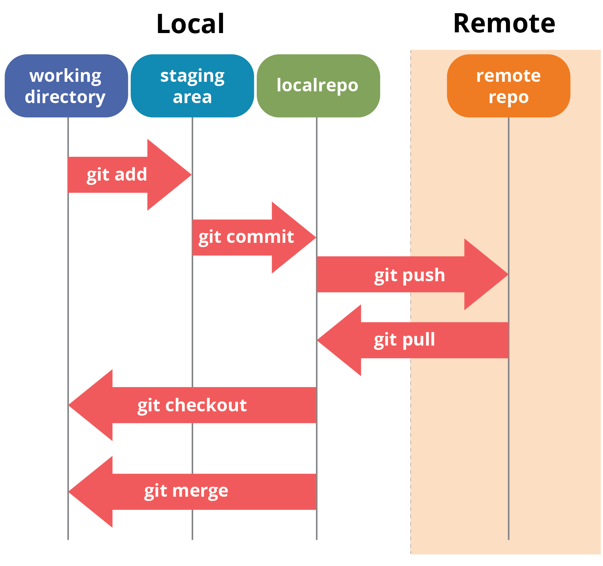

layout: true .right[] --- class: center <br><br> # GIT ### MAS ALLÁ DE LA GESTIÓN DE VERSIONES <br><br><br> .right[.note[Encuentro 2019]] .right[.note[Red de Unidades Informáticas de la UdelaR en el Interior]] --- class: center <br> # Santiago Martínez ### @santiagomr <br> <a href="https://github.com/santiagomr"><img src="src/img/github-sq.png" height="100px"></a> <a href="https://gitlab.com/santiagomr"></a> --- <br> <img src="src/img/git-full-logo.png" height="90px"> <br> -- Sistema de control de versiones -- Para todo. Pero idealmente texto plano / código fuente -- - No lineal (ramas) - Integridad (SHA-1) - Completamente distribuido (local y remoto) --- ## No lineal <br> .center[<img src="src/img/branches-commits.svg" alt="Branches" width="750px">] --- ## Integridad Hashes SHA-1: 03f598e42c0cf4a158e7965b7939f45a51efd4c3 <br><br> .center[<img src="src/img/snapshots.png" alt="Snapshots" width="550px">] --- ## Completamente distribuido <br> .center[] --- ## Git areas .center[] --- .center[] --- # `git init` Inicializar un repositorio ```terminal santiagomr@pc:~/proyecto$ git init Inicializado repositorio Git vacío en /home/santiagomr/proyecto/.git/ ``` ```terminal santiagomr@pc:~/proyecto$ git status En la rama master No hay commits todavía no hay nada para confirmar (crea/copia archivos y usa "git add" para hacerles seguimiento) ``` --- # `git add` Confirmar archivos al 'staging area' ```terminal santiagomr@pc:~/proyecto$ touch nuevo-archivo.txt ``` ```terminal santiagomr@pc:~/proyecto$ git status En la rama master No hay commits todavía Archivos sin seguimiento: (usa "git add <archivo>..." para incluirlo a lo que se será confirmado) <span style="color:red;">nuevo-archivo.txt</span> no hay nada agregado al commit pero hay archivos sin seguimiento presentes (usa "git add" para hacerles seguimiento) ``` --- # `git add` ```terminal santiagomr@pc:~/proyecto$ git add nuevo-archivo.txt ``` ```terminal santiagomr@pc:~/proyecto$ git status En la rama master No hay commits todavía Cambios a ser confirmados: (usa "git rm --cached <archivo>..." para sacar del área de stage) <span style="color:lime;">nuevo archivo: nuevo-archivo.txt</span> ``` --- # `git commit` Confirmar cambios como una versión (repository area) ```terminal santiagomr@pc:~/proyecto$ git commit -m "Mensaje del commit" *** Por favor cuéntame quien eres. Corre git config --global user.email "you@example.com" git config --global user.name "Tu Nombre" para configurar la identidad por defecto de tu cuenta. ``` .small[ ```terminal santiagomr@pc:~/proyecto$ git config --global user.email "santiagomr@mail.com" santiagomr@pc:~/proyecto$ git config --global user.name "santiagomr" ``` ] --- # `git commit` ```terminal santiagomr@pc:~/proyecto$ git commit -m "Mensaje del commit" [master (commit-raíz) 607ac6c] Mensaje del commit 1 file changed, 0 insertions(+), 0 deletions(-) create mode 100644 nuevo-archivo.txt ``` ```terminal santiagomr@pc:~/proyecto$ git status En la rama master nada para hacer commit, el árbol de trabajo esta limpio ``` --- # `git log` Listar commits del 'repository area' local ```terminal santiagomr@pc:~/proyecto$ git log <span style="color:yellow;">commit 607ac6cef8cc1a43d3b5ac89576702f348d07b88</span> Author: santiagomr <santiagomr@mail.com> Date: Wed Oct 23 17:06:55 2019 -0300 Mensaje del commit ``` --- # `git branch` Gestionar ramas ```terminal santiagomr@pc:~/proyecto$ git branch --list * <span style="color:lime;">master</span> ``` ```terminal santiagomr@pc:~/proyecto$ git branch desarrollo ``` ```terminal santiagomr@pc:~/proyecto$ git branch --list desarrollo * <span style="color:lime;">master</span> ``` --- # `git checkout` Comodín del movimiento (ramas, commits, archivos, etc.) ```terminal santiagomr@pc:~/proyecto$ git checkout desarrollo ``` ```terminal santiagomr@pc:~/proyecto$ git branch -l * <span style="color:lime;">desarrollo</span> master ``` --- <br><br> .center[] --- ### Confirmemos otro cambio ```terminal santiagomr@pc:~/proyecto$ touch desarrollando.txt santiagomr@pc:~/proyecto$ git add desarrollando.txt santiagomr@pc:~/proyecto$ git commit -m "Cambio en desarrollo" ``` ```terminal santiagomr@pc:~/proyecto$ git log <span style="color:yellow;">commit 99d4cccd2107cb2812b13584ebf320ea905bed7a</span> Author: santiagomr <santiagomr@mail.com> Date: Sun Oct 27 01:02:42 2019 -0300 Cambio en desarrollo <span style="color:yellow;">commit 607ac6cef8cc1a43d3b5ac89576702f348d07b88</span> Author: santiagomr <santiagomr@mail.com> Date: Sat Oct 26 23:06:55 2019 -0300 Mensaje del commit ``` --- <br><br> .center[] --- # `git merge` Fusionar una rama dentro de otra ```terminal santiagomr@pc:~/proyecto$ git status En la rama desarrollo nada para hacer commit, el árbol de trabajo esta limpio ``` ```terminal santiagomr@pc:~/proyecto$ git checkout master Cambiado a rama 'master' ``` ```terminal santiagomr@pc:~/proyecto$ git merge desarrollo Actualizando 607ac6c..99d4ccc Fast-forward desarrollando.txt | 0 1 file changed, 0 insertions(+), 0 deletions(-) create mode 100644 desarrollando.txt ``` --- # `git merge` ```terminal santiagomr@rock:~/proyecto$ git status En la rama master nada para hacer commit, el árbol de trabajo esta limpio ``` ```terminal santiagomr@pc:~/proyecto$ git log <span style="color:yellow;">commit 99d4cccd2107cb2812b13584ebf320ea905bed7a</span> Author: santiagomr <santiagomr@mail.com> Date: Sun Oct 27 01:02:42 2019 -0300 Cambio en desarrollo <span style="color:yellow;">commit 607ac6cef8cc1a43d3b5ac89576702f348d07b88</span> Author: santiagomr <santiagomr@mail.com> Date: Sat Oct 26 23:06:55 2019 -0300 Mensaje del commit ``` --- <br><br><br> .center[] --- .center[] --- Servicio web que brinda una interfaz para gestionar repositorios remotos Git, anexando numerosas herramientas de desarrollo colaborativo como reporte y seguimiento de incidencias, solicitudes de fusión, wikis, CI/CD, etc. <br> Ediciones *Community (CE)* y *Enterprise (EE)*, podemos montar nuestra propia instancia. --- # `git remote` Asociar un repositorio remoto ("**origin**") ```terminal santiagomr@pc:~/proyecto$ git remote --verbose ``` ```terminal santiagomr@pc:~/proyecto$ git remote add origin \ > git@gitlab.com:santiagomr/demo.git ``` ```terminal santiagomr@pc:~/proyecto$ git remote --verbose origin git@gitlab.com:santiagomr/demo.git (fetch) origin git@gitlab.com:santiagomr/demo.git (push) ``` --- # `git push` Reflejar cambios al repositorio local en el remoto ```terminal santiagomr@pc:~/proyecto$ git push fatal: La rama actual master no tiene una rama upstream. Para realizar un push de la rama actual y configurar el remoto como upstream, use git push --set-upstream origin master ``` ```terminal santiagomr@pc:~/proyecto$ git push --set-upstream origin master Contando objetos: 5, listo. Delta compression using up to 4 threads. Comprimiendo objetos: 100% (3/3), listo. Escribiendo objetos: 100% (5/5), 458 bytes | 458.00 KiB/s, listo. Total 5 (delta 0), reused 0 (delta 0) To gitlab.com:santiagomr/demo.git * [new branch] master -> master ``` --- # `git pull` Reflejar cambios al repositorio remoto en el local ```terminal santiagomr@pc:~/proyecto$ git pull Actualizando 99d4ccc..378c022 Fast-forward README.md | 1 <span style="color:lime;">+</span> nuevo-archivo.txt | 1 <span style="color:lime;">+</span> 2 files changed, 2 insertions(+) create mode 100644 README.md ``` --- ```terminal santiagomr@pc:~/proyecto$ git log <span style="color:yellow;">commit 378c022b2b38b6b0b5975ca08e7eb3bdd5354c89</span> Author: Santiago Martinez <santiagomr@mail.com> Date: Mon Oct 28 17:02:55 2019 -0300 Agregar README.md <span style="color:yellow;">commit 5322e078876499845c490553131e70e527f909f6</span> Author: Santiago Martinez <santiagomr@mail.com> Date: Mon Oct 28 17:01:50 2019 -0300 Update nuevo-archivo.txt <span style="color:yellow;">commit 99d4cccd2107cb2812b13584ebf320ea905bed7a</span> Author: santiagomr <santiagomr@mail.com> Date: Sun Oct 27 01:02:42 2019 -0300 Cambio en desarrollo <span style="color:yellow;">commit 607ac6cef8cc1a43d3b5ac89576702f348d07b88</span> Author: santiagomr <santiagomr@mail.com> Date: Sat Oct 26 23:06:55 2019 -0300 Mensaje del commit ``` --- # Resolver conflictos ```terminal santiagomr@pc:~/proyecto$ echo \ > 'Hola mundo desde local!' >> desarrollando.txt santiagomr@pc:~/proyecto$ git commit -am "Cambio local" [master dae2377] Cambio local 1 file changed, 1 insertion(+) ``` <br> **Desde GitLab, modificamos el mismo archivo, pero agregando 'Hola mundo desde remoto!'** --- <br> **Actualizamos desde remoto y se generará el conflicto** ```terminal santiagomr@pc:~/proyecto$ git pull remote: Enumerating objects: 5, done. remote: Counting objects: 100% (5/5), done. remote: Compressing objects: 100% (2/2), done. remote: Total 3 (delta 0), reused 0 (delta 0) Desempaquetando objetos: 100% (3/3), listo. Desde gitlab.com:santiagomr/demo 378c022..4730511 master -> origin/master Auto-fusionando desarrollando.txt CONFLICTO (contenido): Conflicto de fusión en desarrollando.txt Fusión automática falló; arregle los conflictos y luego realice un commit con el resultado ``` --- ```terminal santiagomr@pc:~/proyecto$ git status En la rama master Tu rama y 'origin/master' han divergido, y tienen 1 y 1 commits diferentes cada una respectivamente. (usa "git pull" para fusionar la rama remota en la tuya) Rutas no fusionadas: (usa "git add <archivo>..." para marcar una resolución) <span style="color:red;">ambos modificados: desarrollando.txt</span> sin cambios agregados al commit (usa "git add" y/o "git commit -a") ``` ```terminal santiagomr@pc:~/proyecto$ cat desarrollando.txt <<<<<<< HEAD Hola mundo desde local! ======= Hola mundo desde remoto! >>>>>>> 47305110dcbd6cf939620a4e0e950807edfe4e5f ``` --- **Resolvemos el conflicto, decidiendo que queda y que no** ```terminal santiagomr@pc:~/proyecto$ nano desarrollando.txt santiagomr@pc:~/proyecto$ cat desarrollando.txt Hola mundo desde local! Hola mundo desde remoto! ``` **Y reflejamos los cambios en local y remoto** ```terminal santiagomr@pc:~/proyecto$ git commit -am "Merge manual" [master bf5be0d] Merge manual santiagomr@pc:~/proyecto$ git push Contando objetos: 6, listo. Delta compression using up to 4 threads. Comprimiendo objetos: 100% (4/4), listo. Escribiendo objetos: 100% (6/6), 712 bytes | 356.00 KiB/s, listo. Total 6 (delta 0), reused 0 (delta 0) To gitlab.com:santiagomr/demo.git 4730511..bf5be0d master -> master ``` --- <br> ### Comprobar el resultado como profesional ```terminal santiagomr@pc:~/proyecto$ git log --decorate --graph --oneline * <span style="color:yellow;">bf5be0d</span><span style="color:yellow;"> (</span><span style="font-weight:bold;color:aqua;">HEAD -> </span><span style="font-weight:bold;color:lime;">master</span><span style="color:yellow;">, </span><span style="font-weight:bold;color:red;">origin/master</span><span style="color:yellow;">)</span> Merge manual <span style="color:red;">|</span><span style="color:lime;">\</span> <span style="color:red;">|</span> * <span style="color:yellow;">4730511</span> Cambio remoto * <span style="color:lime;">|</span> <span style="color:yellow;">d519b2a</span> Cambio local <span style="color:lime;">|</span><span style="color:lime;">/</span> * <span style="color:yellow;">378c022</span> Agregar README.md * <span style="color:yellow;">5322e07</span> Update nuevo-archivo.txt * <span style="color:yellow;">99d4ccc</span><span style="color:yellow;"> (</span><span style="font-weight:bold;color:red;">origin/desarrollo</span><span style="color:yellow;">, </span><span style="font-weight:bold;color:lime;">desarrollo</span><span style="color:yellow;">)</span> Cambio en desarrollo * <span style="color:yellow;">607ac6c</span> Mensaje del commit ``` --- # `git diff` Comparar elementos (archivos, commits, ramas, etc.) ```terminal santiagomr@pc:~/proyecto$ git diff \ > 47305110dcbd6cf939620a4e0e950807edfe4e5f \ > bf5be0deca8074d76464770863cd2622a6b0699e <span style="font-weight:bold;">diff --git a/desarrollando.txt b/desarrollando.txt</span> <span style="font-weight:bold;">index da9f99e..ca6fb02 100644</span> <span style="font-weight:bold;">--- a/desarrollando.txt</span> <span style="font-weight:bold;">+++ b/desarrollando.txt</span> <span style="color:aqua;">@@ -1 +1,2 @@</span> <span style="color:red;">-Hola mundo desde remoto!</span> \ No newline at end of file <span style="color:lime;">+</span><span style="color:lime;">Hola mundo desde local!</span> <span style="color:lime;">+</span><span style="color:lime;">Hola mundo desde remoto!</span> ``` --- ### Recuperar versión anterior de un archivo ```terminal santiagomr@pc:~/proyecto$ cat desarrollando.txt Hola mundo desde local! Hola mundo desde remoto! ``` ```terminal santiagomr@pc:~/proyecto$ git checkout \ > 47305110dcbd6cf939620a4e0e950807edfe4e5f -- desarrollando.txt santiagomr@pc:~/proyecto$ cat desarrollando.txt Hola mundo desde remoto! ``` ```terminal santiagomr@pc:~/proyecto$ git status En la rama master Tu rama está actualizada con 'origin/master'. Cambios a ser confirmados: (usa "git reset HEAD <archivo>..." para sacar del área de stage) <span style="color:lime;">modificado: desarrollando.txt</span> ``` --- # Es solo el comienzo ### Queda mucha magia por hacer - `git stash` - `git reset` - `git rebase` - `git revert` - `git cherry-pick` - `.gitignore` --- class: center <br><br> # MAS ALLÁ <br> ### FLUJOS DE TRABAJO PARA EQUIPOS --- class: center # CENTRALIZADO <br> <img src="src/img/workflows/centralized.svg" alt="centralized" width="600px"> --- <br> **Se utiliza solo una rama en local y remoto, normalmente `master`, en ella se realizan todo los cambios** ### Ventajas - Muy simple de empezar a utilizar ### Desventajas - Conflictos frecuentes y complejos - No se puede segmentar el avance - Pérdidas accidentales --- class: center --- class: center <br> # FEATURE BRANCHING <br><br> <img src="src/img/workflows/feature-branching.svg" alt="feature branching" width="700px"> --- **Se destina una rama independiente para trabajar cada característica (*feature*) del proyecto. Una vez implementada, cada rama es llevada a la principal.** ### Ventajas - Aislación de los avances sobre cada característica en concreto - Fusiones controlables. Merge/pull requests. ### Desventajas - Requiere algo de fluidez con Git --- class: center # GITFLOW <img src="src/img/workflows/gitflow.svg" alt="gitflow" width="600px"> --- ***Feature branching* llevado al siguiente nivel. Al flujo anterior se agregan ramas específicas para desarrollo e integración, lanzamientos y fix de bugs.** ### Ventajas - Ideal para ciclos de lanzamiento frecuentes - Orden y facilidad de integración ### Desventajas - El equipo debe entender y respetar el protocolo - Requiere algo de fluidez con Git --- class: center # GITFLOW # + <br> # DEMO --- layout: false class: center middle <img src="src/img/fire.png" alt="Emergency procedure" height="550px">